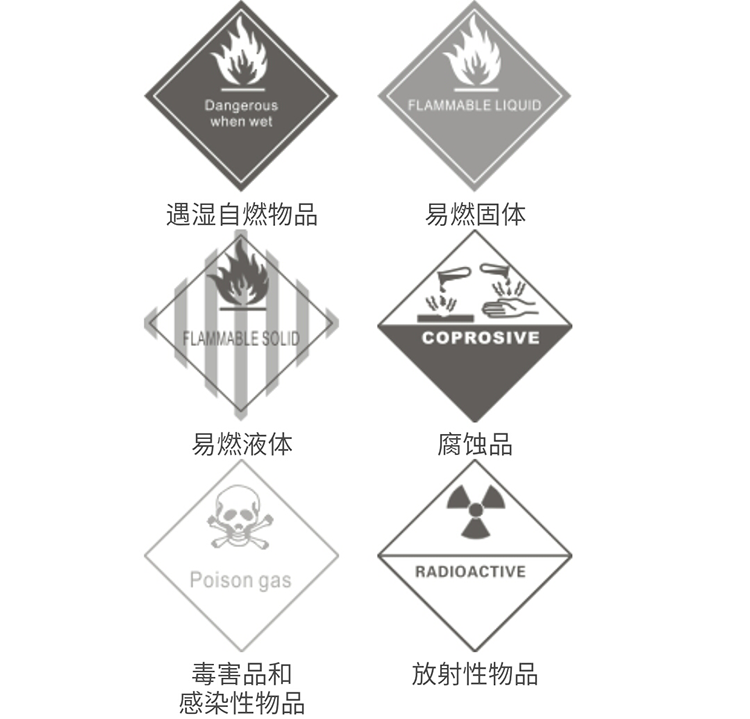

欢迎你使用陆陆捌货到家软件及服务。
为正常使用陆陆捌货到家软件（以下简称“本软件”）及服务， 请你务必审慎阅读、充分理解各条款内容，特别是责任限制条款。 除非你已阅读并接受本协议所有条款，否则你无权继续使用本软件及相关服务。
一、本协议之目的：陆陆捌货到家软件中提供之服务信息仅为普通货物运输信息，请你务必知晓与理解。
故你在使用本软件过程中应严格按照陆陆捌货到家软件适用范围进行相关货物的托运。
上述“货物”具体指：陆陆捌货到家软件所允许你托运的货物为普通货物，不包含任何危险品、禁运品以及任何形式的赃物。
二、本软件禁止你托运危险品、禁运品以及赃物：2.1 危险品：危险品是指能对健康、安全、财产和环境构成危险。分类如下：
2.1.1 爆炸品（任何具有或怀疑具有爆炸特性的物品或特质。如烟火剂、烟花爆竹、导火索等）
2.1.2压缩气体（在50°C 能产生大于300千帕压力的蒸气，或常压下在20°C 完全气化。如压缩空气、二氧化硫等）
2.1.3易燃液体（常见的此有：汽油、煤油、柴油、甲醇、乙醇（酒精）、含有机溶剂的各种涂料、清漆、胶粘剂等。
2.1.4危险固体（常见的有金属镁、铝粉、松香、硫磺等）
2.1.5氧化剂和有机过氧化物
2.1.6毒害品和传染性物质（如敌敌畏、烟碱等）
2.1.7放射性物质
2.1.8腐蚀品（常见的有硝酸、硫酸、盐酸、次氯酸钠溶液（漂白水）等。
2.1.9杂项危险品（如：固体二氧化碳（干冰）、化学试剂箱、发动机、电池驱动机设备、磁性物质等）
2.2 禁运品：除危险品以外，国家有规定禁止航空运输或受严格管制、限制的物品。例如：
2.2.1枪支、军用或警用械具及其主要零部件-道具枪、发令枪、电击枪等所有上述物品的仿制品。（合法运输必须向国家相关主管部门申请特别许可）
2.2.1所有各类弹药、爆破器材、烟火制品等.
2.2.2各类管制刀具及其仿制品。匕首、藏刀、等
2.2.3涉及国家机密的文件、仪器、图表或器材等。
2.2.4国家管制的麻醉药品、神经药物（各类毒品）等如：罂粟、大麻等的植物提取物、麻黄素等。
2.2.5各类反动淫秽的音像制品、刊物、印刷品、宣传品或其他信息载体。（光盘、U盘、存储器）
2.2.6有强烈刺激性气味的物品。
2.2.7带磁性物品（指磁性比较大）。音箱、磁线圈。
为使你知晓并区分危险品、禁运品，请你务必认真查看以下标识及表格：
类别（禁运）
品名
品名一：严禁收运类：易燃、易爆、禁运
酒精（乙醇）、鸡眼水、红磷、萘、赛璐珞、导火索、雷管、炸药和爆炸性药品、烟花、鞭炮、液化汽瓶、砒霜、水银、病毒、毒素、盐酸、烧碱、高锰酸钾、蛇、鳄鱼及其它活体动物等易燃、易爆及国家禁运类货物。
限证运（有证明文件的时候可以承运，但运费不能到付）
1)影视类：如光盘、影碟、音像制品、母碟等等。必须有当地社会文化管理委员会办公室发的《音像制品运输传递证明》及《货物清单》，由客户自己提供。
2)烟草类：必须有当地草专卖局核发的《烟草准运证明》和《出厂证明》、清单。证明由客户提供。
3)林业类：如木材、家私、木制办公用品等等。
必须要木材检疫证明。证明由客户自行办理。4)不明物品：不明液体或不明粉剂等。如白色粉沫。
需要有出厂证明、货物的性状，必要时还应当提供生产技术部门出具的技术说明书。
其包装和重量也必须符合安全运输的要求。
三：收运此类货物如果发生泄露，污染其它货物的，所产生的损失全部由托运人承担
油漆、油墨、胶水、涂料、香精、泡水咸菜、袋装牛奶、电解液、蓄电池等易泄漏、易燃、气味难闻，容易污染其它货物的货物。
2.3 赃物：是指违法犯罪所得的各种形式的货物，包括普通货物以及其他货物。
三、你知晓并同意禁止托运危险品、禁运品、赃物为使用本软件之必备前提条件。 如你所托运的货物含有上述物品，请立即停止使用本软件及服务。 如果你违反规定托运了禁运品、赃物，则国家机关可能会对你提出诉讼、罚款或采取其他制裁措施，并要求陆陆捌货到家给予协助，你应该自行承担相应法律责任。
四、如你与陆陆捌货到家之间关于本协议内容发生任何争议及纠纷，首先应友好协商解决；协商不成的，陆陆捌货到家以及你同意将纠纷提交到深圳仲裁委员会仲裁解决。